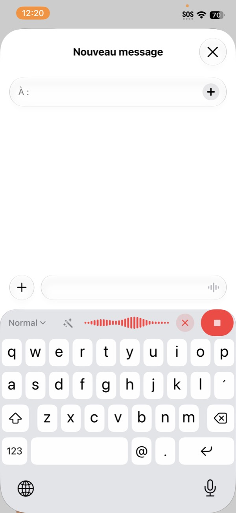
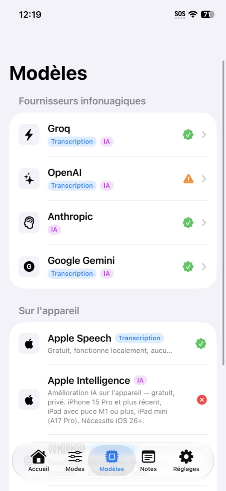
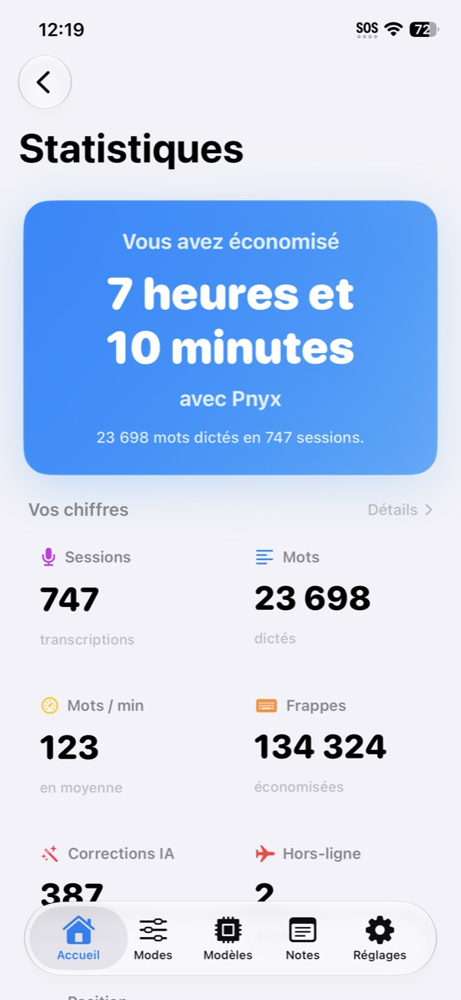

Pnyx
Votre voix, parfaitement écrite. Your voice, perfectly written.
macOS 26+ · notariée par Apple · mises à jour automatiques intégrées (Sparkle). Le Helper Windows reçoit vos dictées iPhone/iPad — nécessite la dernière version de Pnyx. macOS 26+ · notarized by Apple · built-in automatic updates (Sparkle). The Windows Helper receives your iPhone/iPad dictations — requires the latest version of Pnyx.

Sur l'appareil. Ou dans le cloud. On your device. Or in the cloud.
Chaque fonction est pensée pour aller vite et rester privée : le local d'abord, le cloud seulement si vous le choisissez. Every feature is built to be fast and private: on-device first, cloud only if you choose it.
Transcription 100 % locale… ou cloudFully on-device… or cloud transcription
Sur l'appareil avec Whisper, Parakeet ou Nemotron (NVIDIA) — aucun envoi réseau. Ou en cloud (Groq, OpenAI, Gemini) avec vos propres clés, pour une vitesse maximale. On-device with Whisper, Parakeet, or Nemotron (NVIDIA) — nothing leaves your device. Or in the cloud (Groq, OpenAI, Gemini) with your own keys, for maximum speed.
Amélioration IA du texteAI text enhancement
Reformulation, correction, ton, format : confiez le texte à Claude, GPT, Gemini ou Apple Intelligence (sur l'appareil), selon le mode choisi. Rephrase, correct, adjust tone and format: hand the text to Claude, GPT, Gemini, or Apple Intelligence (on-device), depending on the mode you pick.

« euh donc en fait je voulais dire que le truc là il marche pas quand je suis dans le métro » “um so actually i wanted to say that the thing doesn't work when i'm on the subway”
« Je voulais signaler que la fonctionnalité ne fonctionne pas dans le métro. » “I wanted to report that the feature doesn't work on the subway.”
Dictez dans n'importe quelle app. Dictate in any app.
Sur iPhone, sur iPad, sur Mac — et même vers votre PC Windows. On iPhone, iPad, Mac — and even to your Windows PC.
Clavier iOS : dictez partoutiOS keyboard: dictate anywhere
Un clavier complet avec la dictée intégrée — dans Messages, Mail, Safari, n'importe quelle app, sans changer d'application. A full keyboard with built-in dictation — in Messages, Mail, Safari, any app, without switching apps.
Pnyx pour MacPnyx for Mac
Raccourci global, dictée dans n'importe quelle app avec collage au curseur, et Power Mode : des règles automatiques par application ou par site web. Global shortcut, dictation in any app with paste-at-cursor, and Power Mode: automatic rules per app or per website.
Pnyx Helper : dictez vers vos ordinateursPnyx Helper: dictate to your computers
Dictez sur l'iPhone ou l'iPad : le texte arrive instantanément sur votre Mac ou PC (presse-papier ou collage au curseur), par le réseau local, chiffré, sans aucun serveur. Dictate on your iPhone or iPad: the text lands instantly on your Mac or PC (clipboard or paste-at-cursor), over the local network, encrypted, with no server involved.
Vos mots, bien rangés. Your words, well organized.
Notes, vocabulaire, synchronisation et statistiques : tout suit, d'un appareil à l'autre. Notes, vocabulary, sync, and statistics: everything follows you across devices.
Notes avec assistant IANotes with an AI assistant
Capturez vos idées à la voix, puis résumez, structurez ou développez-les avec l'assistant intégré. Capture your ideas by voice, then summarize, structure, or expand them with the built-in assistant.
Dictionnaire personnelPersonal dictionary
Noms propres, jargon, sigles : Pnyx apprend vos mots et les écrit correctement à chaque dictée. Proper names, jargon, acronyms: Pnyx learns your words and writes them correctly every time.
Synchro iCloudiCloud sync
Modes, notes, dictionnaire et statistiques suivent d'un appareil à l'autre — via votre iCloud privé, jamais un serveur tiers. Modes, notes, dictionary, and statistics follow you across devices — through your private iCloud, never a third-party server.
StatistiquesStatistics
Mots dictés, temps gagné, séries : suivez votre usage — et comparez-vous, si vous voulez, au classement mondial. Words dictated, time saved, streaks: track your usage — and compare yourself, if you like, on the world leaderboard.

Aucun serveur. Aucune collecte. No server. No data collection.
Pnyx ne possède aucun serveur : vos dictées vont de votre appareil au fournisseur que vous choisissez — ou ne partent nulle part si vous restez en local. Le développeur ne voit jamais vos données. Pnyx has no server of its own: your dictations go from your device to the provider you choose — or nowhere at all if you stay on-device. The developer never sees your data.
Vos données restent sur votre appareil, vos clés API sont chiffrées dans le Trousseau. Pas de serveur Pnyx, pas de pistage, pas d'analytique. Your data stays on your device, your API keys are encrypted in the Keychain. No Pnyx server, no tracking, no analytics.
Lire la politique de confidentialité Read the privacy policy
Rejoignez la communautéJoin the community
Posez vos questions, proposez vos idées, suivez les nouveautés et échangez avec les autres utilisateurs de Pnyx. Ask your questions, suggest ideas, follow what's new, and chat with other Pnyx users.
Rejoindre le DiscordJoin the DiscordPnyx pour MacPnyx for Mac
La dictée intelligente dans toutes vos apps Mac : appuyez sur le raccourci, parlez, le texte apparaît au curseur. Smart dictation across all your Mac apps: press the shortcut, speak, and the text appears at your cursor.
Télécharger Pnyx pour Mac (0.3) · Bêta Download Pnyx for Mac (0.3) · BetaSur PC Windows : télécharger Pnyx Helper pour Windows (1.3) (portable — recevez vos dictées iPhone/iPad sur le PC, se met à jour tout seul ; nécessite la dernière version de Pnyx). On Windows PCs: download Pnyx Helper for Windows (1.3) (portable — receive your iPhone/iPad dictations on the PC, updates itself; requires the latest version of Pnyx).
Sur iPhone et iPad : disponible sur l'App Store. On iPhone and iPad: available on the App Store.